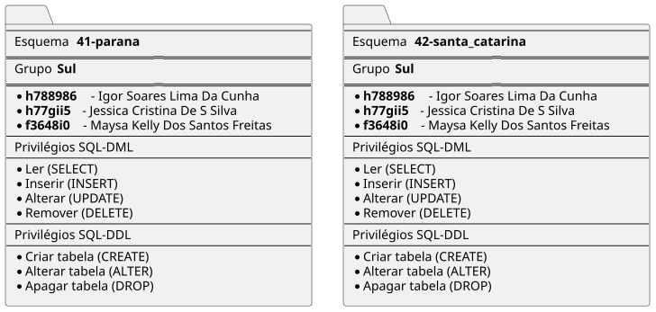
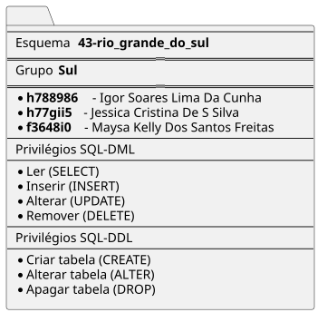

Slide 4 Administração e Gerenciamento de Bancos de Dados
4.2 Usuários, Grupos e Esquemas de Bancos de Dados
4.2.2 Criação de usuários no MySQL
-- turma TI2P40
-- usuários no MySQL
DROP USER IF EXISTS 'f362bf0'@'%'; -- apaga o 'Bruno Antonio Marques';
DROP USER IF EXISTS 'r536fa6'@'%'; -- apaga o 'Caio Cesar Balbino Da Silva';
DROP USER IF EXISTS 'h756960'@'%'; -- apaga o 'Heder Rodrigues Da Silva';
DROP USER IF EXISTS 'r8133g7'@'%'; -- apaga o 'Ítalo Kevin Rodrigues Da Silva';
DROP USER IF EXISTS 'r837aa0'@'%'; -- apaga o 'Lucas Souza Rodrigues';
DROP USER IF EXISTS 'h714419'@'%'; -- apaga o 'Marcos Paulo Cordeiro Goes';
DROP USER IF EXISTS 'r854124'@'%'; -- apaga o 'Ramon Borges De Holanda';
CREATE USER 'f362bf0'@'%' IDENTIFIED BY 'unip' COMMENT 'Bruno Antonio Marques';
CREATE USER 'r536fa6'@'%' IDENTIFIED BY 'unip' COMMENT 'Caio Cesar Balbino Da Silva';
CREATE USER 'h756960'@'%' IDENTIFIED BY 'unip' COMMENT 'Heder Rodrigues Da Silva';
CREATE USER 'r8133g7'@'%' IDENTIFIED BY 'unip' COMMENT 'Ítalo Kevin Rodrigues Da Silva';
CREATE USER 'r837aa0'@'%' IDENTIFIED BY 'unip' COMMENT 'Lucas Souza Rodrigues';
CREATE USER 'h714419'@'%' IDENTIFIED BY 'unip' COMMENT 'Marcos Paulo Cordeiro Goes';
CREATE USER 'r854124'@'%' IDENTIFIED BY 'unip' COMMENT 'Ramon Borges De Holanda';
-- turma TI1P40
DROP USER IF EXISTS 'n0296a6'@'%'; -- apaga o 'Bryan Lucena Barbosa Da Silva';
DROP USER IF EXISTS 'h788986'@'%'; -- apaga o 'Igor Soares Lima Da Cunha';
DROP USER IF EXISTS 'h77gii5'@'%'; -- apaga o 'Jessica Cristina De S Silva';
DROP USER IF EXISTS 'f3648i0'@'%'; -- apaga o 'Maysa Kelly Dos Santos Freitas';
CREATE USER 'n0296a6'@'%' IDENTIFIED BY 'unip' COMMENT 'Bryan Lucena Barbosa Da Silva';
CREATE USER 'h788986'@'%' IDENTIFIED BY 'unip' COMMENT 'Igor Soares Lima Da Cunha';
CREATE USER 'h77gii5'@'%' IDENTIFIED BY 'unip' COMMENT 'Jessica Cristina De S Silva';
CREATE USER 'f3648i0'@'%' IDENTIFIED BY 'unip' COMMENT 'Maysa Kelly Dos Santos Freitas';4.2.3 Criação de Esquemas de Banco de Dados no MySQL
-- Script para criar um esquema (database) para cada UF brasileira
-- Nome do esquema: <código IBGE>-<nome_uf>
-- Ordenado pelo código IBGE
-- Compatível com MySQL 8
CREATE DATABASE IF NOT EXISTS `11-rondonia`;
CREATE DATABASE IF NOT EXISTS `12-acre`;
CREATE DATABASE IF NOT EXISTS `13-amazonas`;
CREATE DATABASE IF NOT EXISTS `14-roraima`;
CREATE DATABASE IF NOT EXISTS `15-para`;
CREATE DATABASE IF NOT EXISTS `16-amapa`;
CREATE DATABASE IF NOT EXISTS `17-tocantins`;
CREATE DATABASE IF NOT EXISTS `21-maranhao`;
CREATE DATABASE IF NOT EXISTS `22-piaui`;
CREATE DATABASE IF NOT EXISTS `23-ceara`;
CREATE DATABASE IF NOT EXISTS `24-rio_grande_do_norte`;
CREATE DATABASE IF NOT EXISTS `25-paraiba`;
CREATE DATABASE IF NOT EXISTS `26-pernambuco`;
CREATE DATABASE IF NOT EXISTS `27-alagoas`;
CREATE DATABASE IF NOT EXISTS `28-sergipe`;
CREATE DATABASE IF NOT EXISTS `29-bahia`;
CREATE DATABASE IF NOT EXISTS `31-minas_gerais`;
CREATE DATABASE IF NOT EXISTS `32-espiritosanto`;
CREATE DATABASE IF NOT EXISTS `33-rio_de_janeiro`;
CREATE DATABASE IF NOT EXISTS `35-sao_paulo`;
CREATE DATABASE IF NOT EXISTS `41-parana`;
CREATE DATABASE IF NOT EXISTS `42-santa_catarina`;
CREATE DATABASE IF NOT EXISTS `43-rio_grande_do_sul`;
CREATE DATABASE IF NOT EXISTS `50-mato_grosso_do_sul`;
CREATE DATABASE IF NOT EXISTS `51-mato_grosso`;
CREATE DATABASE IF NOT EXISTS `52-goias`;
CREATE DATABASE IF NOT EXISTS `53-distrito_federal`;4.2.4 Criando de Grupos de Permissões no MySQL:
-- ===========================================
-- Criação de roles para as 5 regiões do Brasil
-- ===========================================
CREATE ROLE 'norte';
CREATE ROLE 'nordeste';
CREATE ROLE 'centro_oeste';
CREATE ROLE 'sudeste';
CREATE ROLE 'sul';
-- ===========================================
/*
Concedendo privilégios de leitura (SELECT) a cada grupo criado
*/
-- ===========================================
GRANT SELECT ON *.* TO 'norte';
GRANT SELECT ON *.* TO 'nordeste';
GRANT SELECT ON *.* TO 'centro_oeste';
GRANT SELECT ON *.* TO 'sudeste';
GRANT SELECT ON *.* TO 'sul';
-- ===========================================
-- Para atribuir um role a um usuário:
-- ===========================================
-- GRANT 'norte' TO 'usuario_exemplo'@'%';
-- SET DEFAULT ROLE 'norte' TO 'usuario_exemplo'@'%';4.3 Fazendo tudo funcionar: Colocando usuários em grupos e concedendo a estes acesso a Esquemas de Banco de Dados:
4.3.1 Associando os esquemas que representam cada estado a cada grupo (que representa cada regição):
-- ================================================
-- Associação dos esquemas (databases) aos roles
-- Roles criadas previamente:
-- norte, nordeste, centro_oeste, sudeste, sul
-- ================================================
-- >>>>> REGIÃO NORTE >>>>>>>>>>>>>>
GRANT ALL PRIVILEGES ON `11-rondonia`.* TO 'norte';
GRANT ALL PRIVILEGES ON `12-acre`.* TO 'norte';
GRANT ALL PRIVILEGES ON `13-amazonas`.* TO 'norte';
GRANT ALL PRIVILEGES ON `14-roraima`.* TO 'norte';
GRANT ALL PRIVILEGES ON `15-para`.* TO 'norte';
GRANT ALL PRIVILEGES ON `16-amapa`.* TO 'norte';
GRANT ALL PRIVILEGES ON `17-tocantins`.* TO 'norte';
-- >>>>> REGIÃO NORDESTE >>>>>>>>>>>>>>
GRANT ALL PRIVILEGES ON `21-maranhao`.* TO 'nordeste';
GRANT ALL PRIVILEGES ON `22-piaui`.* TO 'nordeste';
GRANT ALL PRIVILEGES ON `23-ceara`.* TO 'nordeste';
GRANT ALL PRIVILEGES ON `24-rio_grande_do_norte`.* TO 'nordeste';
GRANT ALL PRIVILEGES ON `25-paraiba`.* TO 'nordeste';
GRANT ALL PRIVILEGES ON `26-pernambuco`.* TO 'nordeste';
GRANT ALL PRIVILEGES ON `27-alagoas`.* TO 'nordeste';
GRANT ALL PRIVILEGES ON `28-sergipe`.* TO 'nordeste';
GRANT ALL PRIVILEGES ON `29-bahia`.* TO 'nordeste';
-- >>>>> REGIÃO CENTRO_OESTE >>>>>>>>>>>>>>
GRANT ALL PRIVILEGES ON `50-mato_grosso_do_sul`.* TO 'centro_oeste';
GRANT ALL PRIVILEGES ON `51-mato_grosso`.* TO 'centro_oeste';
GRANT ALL PRIVILEGES ON `52-goias`.* TO 'centro_oeste';
GRANT ALL PRIVILEGES ON `53-distrito_federal`.* TO 'centro_oeste';
-- >>>>> REGIÃO SUDESTE >>>>>>>>>>>>>>
GRANT ALL PRIVILEGES ON `31-minas_gerais`.* TO 'sudeste';
GRANT ALL PRIVILEGES ON `32-espiritosanto`.* TO 'sudeste';
GRANT ALL PRIVILEGES ON `33-rio_de_janeiro`.* TO 'sudeste';
GRANT ALL PRIVILEGES ON `35-sao_paulo`.* TO 'sudeste';
-- >>>>> REGIÃO SUL >>>>>>>>>>>>>>
GRANT ALL PRIVILEGES ON `41-parana`.* TO 'sul';
GRANT ALL PRIVILEGES ON `42-santa_catarina`.* TO 'sul';
GRANT ALL PRIVILEGES ON `43-rio_grande_do_sul`.* TO 'sul';4.3.2 Associando associando alunos a cada grupo (região):
| Role (grupo) | Usuários (login) |
|---|---|
| norte | f362bf0, r536fa6 |
| nordeste | h756960, r8133g7 |
| centro_oeste | r837aa0, h714419 |
| sudeste | r854124, n0296a6 |
| sul | h788986, h77gii5, f3648i0 |
4.3.2.5 Região Sul


-- =========================================
-- Associação de usuários aos roles (grupos)
-- =========================================
-- Grupo Norte
GRANT 'norte' TO 'f362bf0'@'%';
GRANT 'norte' TO 'r536fa6'@'%';
-- Grupo Nordeste
GRANT 'nordeste' TO 'h756960'@'%';
GRANT 'nordeste' TO 'r8133g7'@'%';
-- Grupo Centro-Oeste
GRANT 'centro_oeste' TO 'r837aa0'@'%';
GRANT 'centro_oeste' TO 'h714419'@'%';
-- Grupo Sudeste
GRANT 'sudeste' TO 'r854124'@'%';
GRANT 'sudeste' TO 'n0296a6'@'%';
-- Grupo Sul
GRANT 'sul' TO 'h788986'@'%';
GRANT 'sul' TO 'h77gii5'@'%';
GRANT 'sul' TO 'f3648i0'@'%';
-- (Opcional) Definir cada role como padrão para o usuário
SET DEFAULT ROLE ALL TO
'f362bf0'@'%',
'r536fa6'@'%',
'h756960'@'%',
'r8133g7'@'%',
'r837aa0'@'%',
'h714419'@'%',
'r854124'@'%',
'n0296a6'@'%',
'h788986'@'%',
'h77gii5'@'%',
'f3648i0'@'%';4.3.3 Concedendo privilégios aos grupos:
-- ============================================
-- NORTE lê os demais grupos (Nordeste, Centro-Oeste, Sudeste, Sul)
-- ============================================
GRANT SELECT ON `21-maranhao`.* TO 'norte';
GRANT SELECT ON `22-piaui`.* TO 'norte';
GRANT SELECT ON `23-ceara`.* TO 'norte';
GRANT SELECT ON `24-rio_grande_do_norte`.* TO 'norte';
GRANT SELECT ON `25-paraiba`.* TO 'norte';
GRANT SELECT ON `26-pernambuco`.* TO 'norte';
GRANT SELECT ON `27-alagoas`.* TO 'norte';
GRANT SELECT ON `28-sergipe`.* TO 'norte';
GRANT SELECT ON `29-bahia`.* TO 'norte';
GRANT SELECT ON `50-mato_grosso_do_sul`.* TO 'norte';
GRANT SELECT ON `51-mato_grosso`.* TO 'norte';
GRANT SELECT ON `52-goias`.* TO 'norte';
GRANT SELECT ON `53-distrito_federal`.* TO 'norte';
GRANT SELECT ON `31-minas_gerais`.* TO 'norte';
GRANT SELECT ON `32-espiritosanto`.* TO 'norte';
GRANT SELECT ON `33-rio_de_janeiro`.* TO 'norte';
GRANT SELECT ON `35-sao_paulo`.* TO 'norte';
GRANT SELECT ON `41-parana`.* TO 'norte';
GRANT SELECT ON `42-santa_catarina`.* TO 'norte';
GRANT SELECT ON `43-rio_grande_do_sul`.* TO 'norte';
-- ============================================
-- NORDESTE lê os demais grupos (Norte, Centro-Oeste, Sudeste, Sul)
-- ============================================
GRANT SELECT ON `11-rondonia`.* TO 'nordeste';
GRANT SELECT ON `12-acre`.* TO 'nordeste';
GRANT SELECT ON `13-amazonas`.* TO 'nordeste';
GRANT SELECT ON `14-roraima`.* TO 'nordeste';
GRANT SELECT ON `15-para`.* TO 'nordeste';
GRANT SELECT ON `16-amapa`.* TO 'nordeste';
GRANT SELECT ON `17-tocantins`.* TO 'nordeste';
GRANT SELECT ON `50-mato_grosso_do_sul`.* TO 'nordeste';
GRANT SELECT ON `51-mato_grosso`.* TO 'nordeste';
GRANT SELECT ON `52-goias`.* TO 'nordeste';
GRANT SELECT ON `53-distrito_federal`.* TO 'nordeste';
GRANT SELECT ON `31-minas_gerais`.* TO 'nordeste';
GRANT SELECT ON `32-espiritosanto`.* TO 'nordeste';
GRANT SELECT ON `33-rio_de_janeiro`.* TO 'nordeste';
GRANT SELECT ON `35-sao_paulo`.* TO 'nordeste';
GRANT SELECT ON `41-parana`.* TO 'nordeste';
GRANT SELECT ON `42-santa_catarina`.* TO 'nordeste';
GRANT SELECT ON `43-rio_grande_do_sul`.* TO 'nordeste';
-- ============================================
-- CENTRO-OESTE lê os demais grupos (Norte, Nordeste, Sudeste, Sul)
-- ============================================
GRANT SELECT ON `11-rondonia`.* TO 'centro_oeste';
GRANT SELECT ON `12-acre`.* TO 'centro_oeste';
GRANT SELECT ON `13-amazonas`.* TO 'centro_oeste';
GRANT SELECT ON `14-roraima`.* TO 'centro_oeste';
GRANT SELECT ON `15-para`.* TO 'centro_oeste';
GRANT SELECT ON `16-amapa`.* TO 'centro_oeste';
GRANT SELECT ON `17-tocantins`.* TO 'centro_oeste';
GRANT SELECT ON `21-maranhao`.* TO 'centro_oeste';
GRANT SELECT ON `22-piaui`.* TO 'centro_oeste';
GRANT SELECT ON `23-ceara`.* TO 'centro_oeste';
GRANT SELECT ON `24-rio_grande_do_norte`.* TO 'centro_oeste';
GRANT SELECT ON `25-paraiba`.* TO 'centro_oeste';
GRANT SELECT ON `26-pernambuco`.* TO 'centro_oeste';
GRANT SELECT ON `27-alagoas`.* TO 'centro_oeste';
GRANT SELECT ON `28-sergipe`.* TO 'centro_oeste';
GRANT SELECT ON `29-bahia`.* TO 'centro_oeste';
GRANT SELECT ON `31-minas_gerais`.* TO 'centro_oeste';
GRANT SELECT ON `32-espiritosanto`.* TO 'centro_oeste';
GRANT SELECT ON `33-rio_de_janeiro`.* TO 'centro_oeste';
GRANT SELECT ON `35-sao_paulo`.* TO 'centro_oeste';
GRANT SELECT ON `41-parana`.* TO 'centro_oeste';
GRANT SELECT ON `42-santa_catarina`.* TO 'centro_oeste';
GRANT SELECT ON `43-rio_grande_do_sul`.* TO 'centro_oeste';
-- ============================================
-- SUDESTE lê os demais grupos (Norte, Nordeste, Centro-Oeste, Sul)
-- ============================================
GRANT SELECT ON `11-rondonia`.* TO 'sudeste';
GRANT SELECT ON `12-acre`.* TO 'sudeste';
GRANT SELECT ON `13-amazonas`.* TO 'sudeste';
GRANT SELECT ON `14-roraima`.* TO 'sudeste';
GRANT SELECT ON `15-para`.* TO 'sudeste';
GRANT SELECT ON `16-amapa`.* TO 'sudeste';
GRANT SELECT ON `17-tocantins`.* TO 'sudeste';
GRANT SELECT ON `21-maranhao`.* TO 'sudeste';
GRANT SELECT ON `22-piaui`.* TO 'sudeste';
GRANT SELECT ON `23-ceara`.* TO 'sudeste';
GRANT SELECT ON `24-rio_grande_do_norte`.* TO 'sudeste';
GRANT SELECT ON `25-paraiba`.* TO 'sudeste';
GRANT SELECT ON `26-pernambuco`.* TO 'sudeste';
GRANT SELECT ON `27-alagoas`.* TO 'sudeste';
GRANT SELECT ON `28-sergipe`.* TO 'sudeste';
GRANT SELECT ON `29-bahia`.* TO 'sudeste';
GRANT SELECT ON `50-mato_grosso_do_sul`.* TO 'sudeste';
GRANT SELECT ON `51-mato_grosso`.* TO 'sudeste';
GRANT SELECT ON `52-goias`.* TO 'sudeste';
GRANT SELECT ON `53-distrito_federal`.* TO 'sudeste';
GRANT SELECT ON `41-parana`.* TO 'sudeste';
GRANT SELECT ON `42-santa_catarina`.* TO 'sudeste';
GRANT SELECT ON `43-rio_grande_do_sul`.* TO 'sudeste';
-- ============================================
-- SUL lê os demais grupos (Norte, Nordeste, Centro-Oeste, Sudeste)
-- ============================================
GRANT SELECT ON `11-rondonia`.* TO 'sul';
GRANT SELECT ON `12-acre`.* TO 'sul';
GRANT SELECT ON `13-amazonas`.* TO 'sul';
GRANT SELECT ON `14-roraima`.* TO 'sul';
GRANT SELECT ON `15-para`.* TO 'sul';
GRANT SELECT ON `16-amapa`.* TO 'sul';
GRANT SELECT ON `17-tocantins`.* TO 'sul';
GRANT SELECT ON `21-maranhao`.* TO 'sul';
GRANT SELECT ON `22-piaui`.* TO 'sul';
GRANT SELECT ON `23-ceara`.* TO 'sul';
GRANT SELECT ON `24-rio_grande_do_norte`.* TO 'sul';
GRANT SELECT ON `25-paraiba`.* TO 'sul';
GRANT SELECT ON `26-pernambuco`.* TO 'sul';
GRANT SELECT ON `27-alagoas`.* TO 'sul';
GRANT SELECT ON `28-sergipe`.* TO 'sul';
GRANT SELECT ON `29-bahia`.* TO 'sul';
GRANT SELECT ON `50-mato_grosso_do_sul`.* TO 'sul';
GRANT SELECT ON `51-mato_grosso`.* TO 'sul';
GRANT SELECT ON `52-goias`.* TO 'sul';
GRANT SELECT ON `53-distrito_federal`.* TO 'sul';
GRANT SELECT ON `31-minas_gerais`.* TO 'sul';
GRANT SELECT ON `32-espiritosanto`.* TO 'sul';
GRANT SELECT ON `33-rio_de_janeiro`.* TO 'sul';
GRANT SELECT ON `35-sao_paulo`.* TO 'sul';